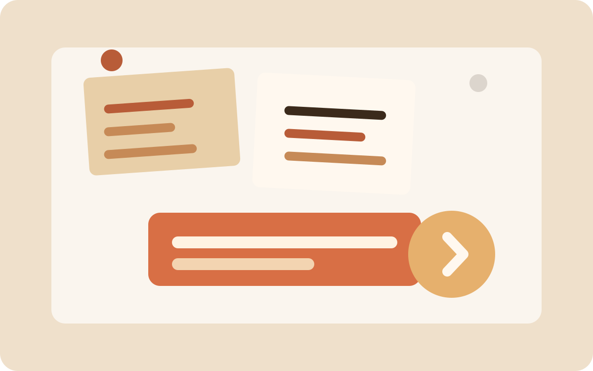

Starting small, shipping early
Why a simple website is often the best way to begin publishing consistent updates online.
Read moreBlog
This section is for essays, progress updates, snapshots, and the occasional lesson learned the hard way.
Why a simple website is often the best way to begin publishing consistent updates online.
Read more
A quick framework for documenting a project before the details get noisy.
Read more